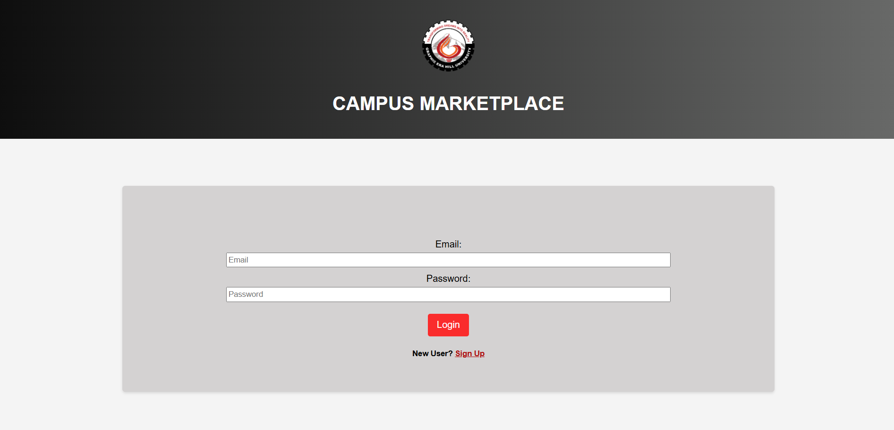
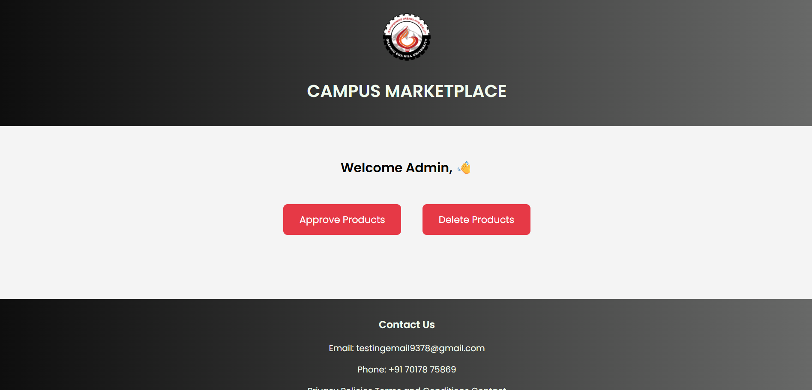
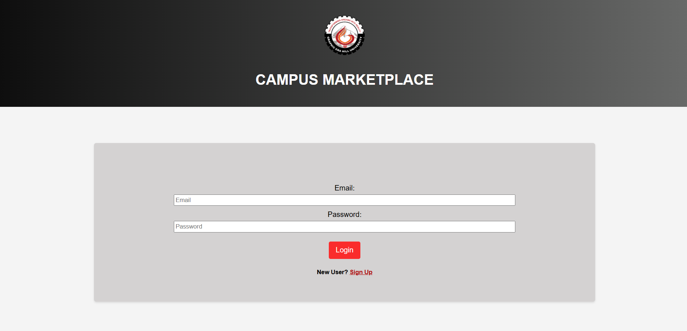
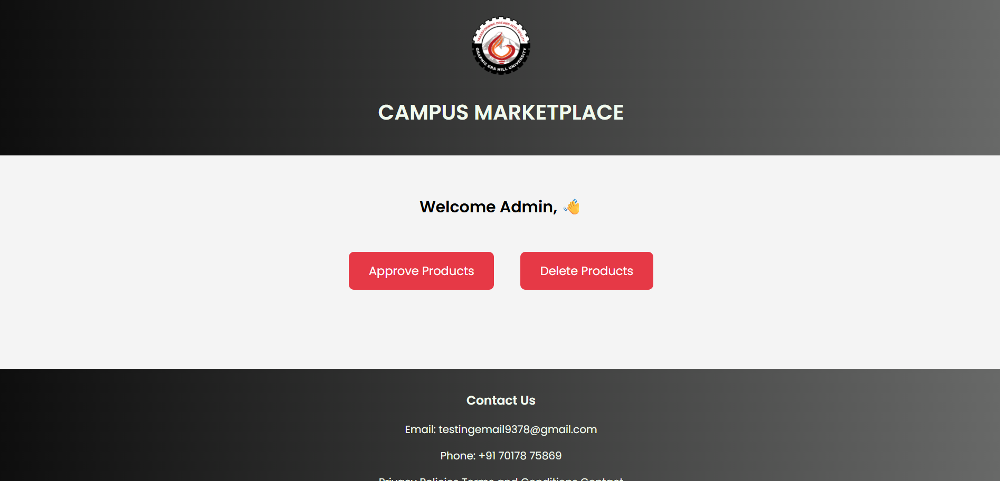

Campus Marketplace - A Student-Centric Secondhand Accessories Platform
 



I created "Campus Marketplace" to make campus life a little easier and more sustainable for students like me.
Ever noticed how things like drafters and sheet holders are super important in the first year, but just gather dust after that? I wanted to help students connect and pass these items along-saving money and reducing waste in the process.
I built the platform using PHP, HTML, CSS, and MySQL. It’s simple to use: students can list what they don’t need anymore or find essentials at a better price.
Campus Marketplace was my way of combining technology and empathy to solve a real problem on campus, and I loved seeing how thoughtful design can lead to practical impact.
Ambulance Call

Ambulance Call is a location-based emergency response system designed to connect patients with the nearest medical facilities and ambulances in critical moments. The application retrieves the user’s exact GPS coordinates (latitude & longitude), displays a list of nearby hospitals, and allows the user to instantly send patient details to the nearest ambulance service with a single tap.
This project was developed using HTML, CSS, JavaScript, and Firebase for real-time data handling. It aims to provide a quick and efficient way to access emergency medical services, ensuring that help is always just a click away.
The project was a part of the Hack-O-Holic 3.0 hackathon, where my team and I built this application under tight deadlines and high pressure. Although we didn’t take home a prize, the real win was the hands-on experience—we learned what it means to collaborate effectively, solve problems in the moment, and stay resilient through long coding sessions.